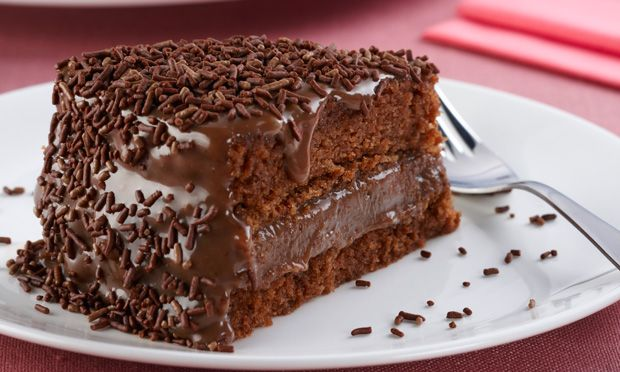

Bolo de Chocolate
Ingredientes
- 2 xícaras (chá) de açúcar
- 4 ovos
- 3/4 de xícara (chá) de óleo
- 3/4 de xícara (chá) de chocolate em pó (não use achocolatado)
- 3/4 de xícara (chá) de água morna
- 2 xícaras (chá) de farinha de trigo
- 1 colher (sopa) de fermento em pó
Modo de preparo
- Em uma batadeira, bata o açúcar com as gemas até ficar um creme bem clarinho.
- Em seguida, adicione o óleo, o achocolatado dissolvido na água morna e a farinha peneirada.
- Bata até a farinha ficar bem encorporada à massa. Junte as clars batidas em neve e misture-as delicadamente.
- Por último, acrescente o fermento em pó.
- Unte e polvilhes 2 formas de 20cm de diâmetro e despeje partes iguais da massa sobre as formas (se desejar, pode fazer numa forma maior e colocar todo o conteúdo da massa sobre ela).
- Leve ao forno pre aquecido a 180°c por cerca de 35 minutos, faça o teste do palito.
- Retire do forno e só desenforme depois de frio.